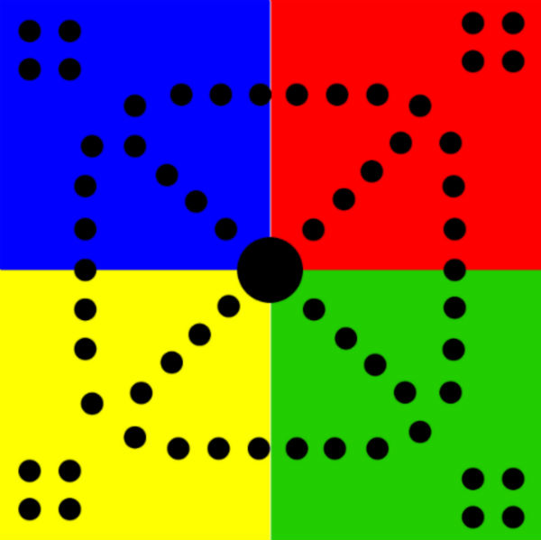
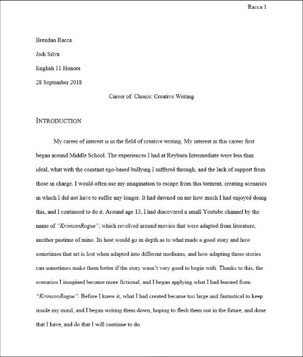
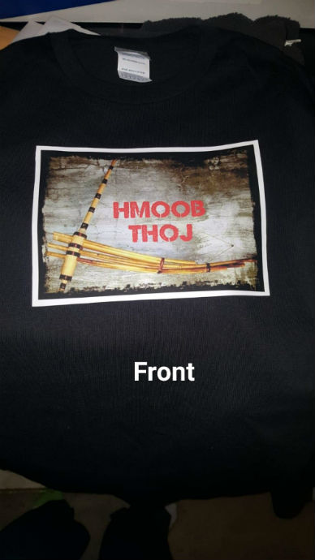

1 / 4

Innovation Web Page
2 / 4

Trouble Project
3 / 4

Career of Choice Essay
4 / 4

Client Project
The first website I created this year was an html document that detailed information on technological innovations. My innovation of choice was an artificial intelligence that can more accurately diagnose depression in humans.Before I began coding, I conducted research on how this AI worked. How much it may cost, and who the target demographic is.
During this project, I, along with one other person, was tasked with recreating the board game Trouble using JavaScript.
Discussed the future career that I desired, the outlook of that occupation, and why. The career that I chose is in the field of writing. I employed the habit of investigation in order to fing sufficient sources, as most of them offered little to no accurate information.
For this project, a partner and I were tasked with creating a website for an upcoming business. Our client was AKMC Designs, a small printing business from Raleigh, North Carolina.